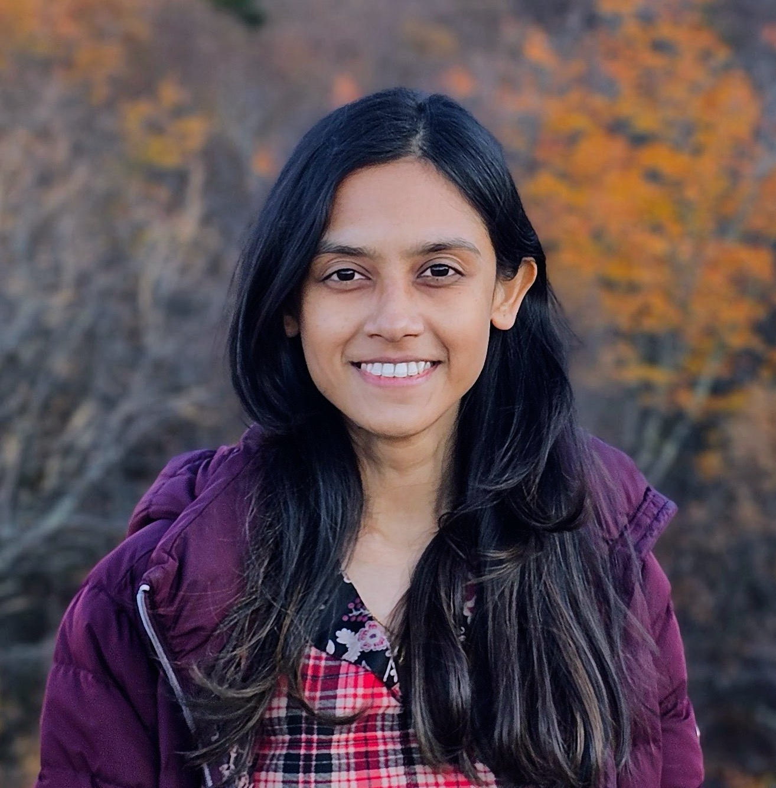

Moumita Choudhury
PhD Candidate · Computer Science · UMass Amherst
I am a PhD candidate at the University of Massachusetts Amherst, advised by Prof. Shlomo Zilberstein in the Resource Bounded Reasoning Lab. I completed my M.Sc. in Computer Science at UMass in 2024. I was also a Research Intern at the Trustworthy AI group, Mitsubishi Electric Research Lab (MERL).
My research sits at the intersection of multi-agent reinforcement learning, AI interpretability, and safe human–AI collaboration. I work on optimizing RL fine-tuning for multi-agent multi-turn problems, generating automated explanations for agent behavior, and designing RL algorithms that integrate human feedback while limiting unintended negative side effects.
Before UMass I was a Research Assistant at the Cognitive Agents and Interaction Lab, University of Dhaka, and a Junior Lecturer at Ahsanullah University of Science and Technology. Outside the lab I enjoy singing, painting, and travelling.

News
Research
Multi-Agent Reinforcement Learning Fine-tuning
I work on developing post-training techniques for multi-agent and multi-turn LLMs — including trustworthiness in test-time training.
Safe and Interpretable AI
I work on making AI systems safer and more interpretable. This includes minimizing negative side effects in cooperative multi-agent systems using distributed coordination, and generating automated explanations of agent behavior via Bayesian Inverse Reinforcement Learning for policy summarization.
Multi-agent Coordination
I develop algorithms for Distributed Constraint Optimization Problems (DCOPs) and functional DCOPs. This includes provably anytime population-based algorithms (AED, PFD) and continuous DCOP solvers, spanning evolutionary, particle swarm, and local search methods, all outperforming state-of-the-art approaches.
Publications
TrustAgent @ AAAI 2026
Amplification Effects in Test-Time Reinforcement Learning: Safety and Reasoning Vulnerabilities
AAAI 2026 Workshop on Trust and Control in Agentic AI (TrustAgent).
ToM4AI @ AAAI 2025
Bayesian Inverse Reinforcement Learning Approach for Policy Summarization
To appear in Advancing Artificial Intelligence through Theory of Mind (ToM4AI) @ AAAI 2025.
OptLearnMAS @ AAMAS 2020 · AAMAS 2020 (Extended Abstract)
C-CoCoA: A Continuous Cooperative Approximation Algorithm to Solve Functional DCOPs
AAMAS 2020 (Extended Abstract), pages 1990–1992. Also at OptLearnMAS @ AAMAS 2020.
FLAIRS 2024 · AAMAS 2024
Minimizing Negative Side Effects in Cooperative Multi-Agent Systems Using Distributed Coordination
The International FLAIRS Conference Proceedings (Vol. 37), 2024. Also appeared as an Extended Abstract at AAMAS 2024.
AAMAS 2021
A Local Search Based Approach to Solve Continuous DCOPs
Proceedings of the 20th International Conference on Autonomous Agents and Multi-Agent Systems, pages 1127–1135, 2021.
IJCAI-PRICAI 2020
Learning Optimal Temperature Region for Solving Mixed Integer Functional DCOPs
Proceedings of the 29th International Joint Conference on Artificial Intelligence (IJCAI), pages 268–275, 2020.
AAMAS 2020
AED: An Anytime Evolutionary DCOP Algorithm
Proceedings of the 19th International Conference on Autonomous Agents and Multi-Agent Systems, pages 825–833, 2020.
Engineering Applications of Artificial Intelligence, 2023
A Particle Swarm Inspired Approach for Continuous Distributed Constraint Optimization Problems
Engineering Applications of Artificial Intelligence 123 (2023): 106280.
Contact
I am happy to discuss research, potential collaborations, or anything else. Feel free to reach out.